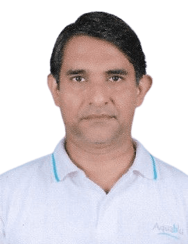

Meet our experienced team of domain specialists with over 25 years of diverse and extensive industry experience in wastewater treatment and environmental solutions.
Our team combines decades of experience in microbiology, chemistry, engineering, and information technology to deliver exceptional wastewater treatment solutions.
Dr. Ananda holds more than three decades of industry experience as a research scientist, presently the deputy director at Coconut Research Institute, Sri Lanka. He was the Principal Soil Scientist and Head of the Soils & Plant Nutrition Division.
His major contributions include involvement in research & technology transfer activities, carrying out major studies, advisories, surveys, service functions, contribution to symposia, recommendations to national development, academic involvements & supervision, media contributions, and organizing & conducting workshops for community groups.
Ushantha oversees the company direction, provision technical consultancy, international trade and business development activities. He's the founding director of the company with vast experience in the fields of microbiology, wastewater treatment and fiber technology.
Ushantha was the former CEO of Klaro, a wastewater treatment company and Managing director of AJ Fishing, a producer of high quality commercial fishing equipment and fiber solutions for Norwegian countries.

Ruwan leads a cross-functional team responsible for research, implementation and IT. He oversees the design and development of automated water treatment process flows, and drives the continuous improvement of the company's IT infrastructure.
He has two decades of experience in IT Services, having worked for the technology consulting divisions of several global firms. Ruwan was Manager, Engineering at Pearson for 9 years, leading specialized shared services such as Release Engineering, Environment Management and Application Support.
He was previously a Technology Consultant at Virtusa Corp. for 8 years, where he gained extensive experience in enterprise-level technology solutions.
The principles that guide our leadership team in delivering exceptional wastewater treatment solutions
Continuously seeking cutting-edge technologies and methodologies to provide the most advanced wastewater treatment solutions.
Leveraging decades of combined experience in microbiology, chemistry, engineering, and technology to solve complex challenges.
Committed to environmental responsibility and developing solutions that protect our water resources for future generations.
Ready to benefit from our leadership team's extensive experience and expertise in wastewater treatment? Contact us today to discuss your project requirements.